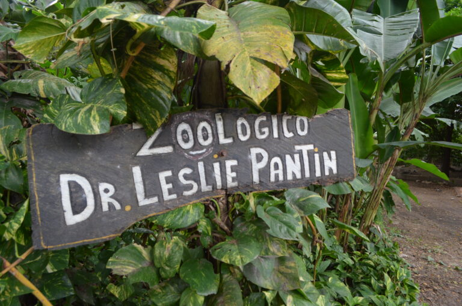

Reserva natural de fauna silvestre
El Zoologico Leslie Pantin es una reserva de gloria y fauna sin fines de lucro, fundada en 1963 por el Dr. Leslie Pantin, este espacio tiene como objetivos principales la educación, la conservación y la reproducción de especies amenazadas y en peligro de extinción.
Desde sus instalaciones el equipo del Zoo Leslie Pantin lleva a cabo diferentes programas con especies como el Caiman del Orinoco, el Galápago Llanero, el Galápago Zuliano y la Tortuga Arrau, reciben y rehabilitan animales que han sido decomisados a cazadores furtivos .
